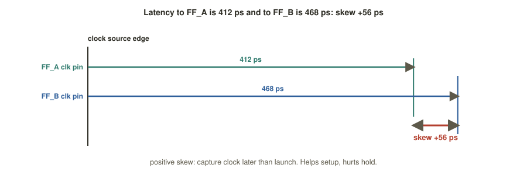
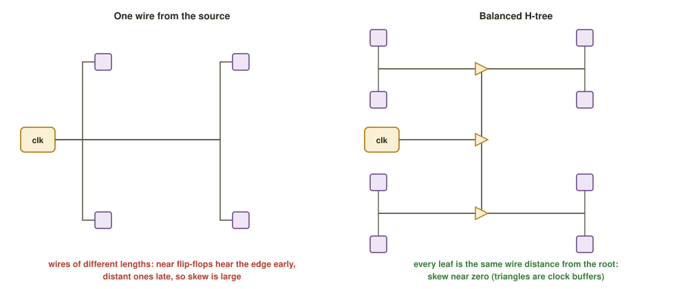

Chapter 5: Clock-Tree Synthesis¶
A data net connects a handful of pins. The clock net connects every flip-flop in the block, often tens of thousands of them, and every one must be told "now" at very nearly the same instant. No single gate can drive that much wire: the edge would crawl, and the flip-flops nearest the source would be clocked long before the farthest ones. Until now the clock has been treated as ideal, infinitely strong and arriving everywhere at once. Clock-tree synthesis (CTS) replaces that fiction with a real, buffered network.
Think of a starting pistol for ten thousand runners spread across a city. You cannot simply shout; you need relay stations so that everyone hears "go" at the same moment. This chapter defines the two numbers that describe how well the relays do their job, latency and skew; shows how skew moves the setup and hold slack; compares the three ways of building the tree; and explains what changes once the clock is real, above all that hold is repaired for the first time.
Learning outcomes
After this chapter you can:
- Explain why the clock net is special and what CTS builds.
- Define latency and skew and compute skew from two latencies.
- Show how positive and negative skew move setup and hold slack.
- Compare buffer trees, H-trees and meshes, and describe useful skew and clock gating.
- Describe the post-CTS flow: propagated clock, setup re-check and hold repair.
5.1 Why the clock is special¶
During synthesis and placement the clock is ideal: it is assumed to reach every flip-flop at once with zero delay. CTS makes it real by building a balanced tree of clock buffers or inverters from the clock source out to every flip-flop, so that arrival times stay tightly matched despite real wire delay. Afterwards the clock is propagated: timing analysis uses the actual delay to every flip-flop, and the timing is checked again against that reality.
The input to the stage is a floorplanned, placed and legalised design, optimised for setup against the ideal clock. Its output is the same design with a real clock tree and propagated (post-CTS) timing, ready for routing.
5.2 Two numbers: latency and skew¶
Latency, also called insertion delay, is the delay from the clock source (a port or a PLL output) to the clock pin of a given flip-flop. It has two parts: source latency (from the source to the block's clock root) and network latency (from the root to the flip-flop, built by CTS). Low latency is nice, but equal latency is what matters.
Skew is the difference in clock arrival time between two flip-flops:
CTS aims for a global skew near zero so that the whole design sees the edge together. Skew is what actually eats into timing margins.
Example 5.1: Latency and skew
The delay from the clock source to the clock pin of FF_A is 412 ps and to FF_B is 468 ps. For a path from FF_A (launch) to FF_B (capture),
Skew is positive: the capture clock arrives later than the launch clock (Figure 5.1).

5.3 How skew moves the slack¶
Skew changes the timing budget directly. With a launch-clock arrival \(t_{launch}\) and a capture-clock arrival \(t_{capture}\), the skew is \(t_{skew} = t_{capture} - t_{launch}\), and the slack formulas of Chapter 2 become
- Positive skew (the capture clock is later) gives the data extra time to arrive, so it helps setup; but the capture flip-flop keeps listening for longer after the edge, so it hurts hold.
- Negative skew (the capture clock is earlier) does the reverse: it helps hold and hurts setup.
That is why CTS drives skew towards zero: neither check is starved, and both budgets stay balanced and predictable across thousands of endpoints. Deliberate skew is used only surgically (Section 5.5).
Example 5.2: One path, setup and hold, with skew
Take the path from FF_A to FF_B of Example 5.1, with \(T = 1000\) ps (1 GHz), \(t_{cq} = 90\) ps, slowest logic 700 ps, fastest logic 120 ps, \(t_{su} = 60\) ps and \(t_h = 40\) ps. The skew is \(+56\) ps.
Setup.
- Arrival \(= t_{cq} + t_{logic,max} = 90 + 700 = 790\) ps (measured from the launch edge).
- Required \(= T + t_{skew} - t_{su} = 1000 + 56 - 60 = 996\) ps.
- Slack \(= 996 - 790 = +206\) ps. Met; the positive skew added 56 ps of margin.
Hold.
- Arrival of the earliest new data \(= t_{cq} + t_{logic,min} = 90 + 120 = 210\) ps.
- Requirement \(= t_h + t_{skew} = 40 + 56 = 96\) ps.
- Slack \(= 210 - 96 = +114\) ps. Met.
If the skew grows to +180 ps: hold slack \(= 210 - (40 + 180) = -10\) ps, a hold violation. The skew that helped setup has eaten the hold margin. (Setup would still be \(1000 + 180 - 60 - 790 = +330\) ps.)
5.4 Three ways to build the tree¶
CTS balances arrival times by choosing a topology for the buffered network, and by sizing and placing its buffers so that every leaf path has matched delay. Figure 5.2 contrasts a single long wire with a balanced H-tree.

| Structure | Idea | Strengths | Costs |
|---|---|---|---|
| Buffer or inverter tree | recursively cluster nearby flip-flops, drive each cluster with a buffer, drive those buffers from the next level up; the default in TritonCTS | scales to millions of flip-flops; flexible; low area compared with a mesh; skew tuned per branch | skew grows with depth; sensitive to on-chip variation along long branches |
| H-tree | a geometrically symmetric, fractal H shape so that every leaf is the same wire distance from the root | excellent balance by construction; good for regular arrays and top-level distribution | rigid; wastes wire when flip-flops are unevenly spread; hard on irregular floorplans |
| Clock mesh or grid | a dense metal grid driven from many points; flip-flops tap the nearest node | very low skew and robust against variation; used in high-performance CPUs and GPUs | large power and metal cost; complex to build and verify |
Table 5.1 Three clock-distribution structures.
Two further techniques are applied on top of the balanced tree.
Useful skew. Instead of forcing zero skew everywhere, the tool can deliberately delay or advance a flip-flop's clock to lend time across a boundary: a tight path is given more setup room by delaying its capture clock, with the time borrowed from a neighbouring path that has margin to spare. It is applied path by path.
Clock gating. The clock network is often the single largest consumer of power, because it toggles every cycle across the whole chip. Clock-gating cells (integrated clock-gate, ICG, cells) switch the clock off to idle register banks. CTS must balance the tree through these gates so that the enable logic does not introduce skew.
5.5 After the tree: a real clock and hold repair¶
Once the tree exists, the clock becomes propagated, and two things happen.
Setup is re-verified. The clock buffers' own delays and the real skew shift every path's budget. Small setup regressions are cleaned up with further sizing and buffering, now against the true clock.
Hold is fixed for the first time. With an ideal clock hold looked fine everywhere. With the real clock, short paths between flip-flops whose clocks arrive at different times can now violate hold. The remedy is to slow the data path down: insert delay (hold) buffers on the short paths so that \(t_{cq} + t_{logic,min}\) grows past \(t_h + t_{skew}\).
# OpenROAD / TritonCTS: build the tree, then propagate and fix hold
clock_tree_synthesis -buf_list {sky130_fd_sc_hd__clkbuf_4 \
sky130_fd_sc_hd__clkbuf_8} \
-root_buf sky130_fd_sc_hd__clkbuf_16 \
-sink_clustering_enable
set_propagated_clock [all_clocks] ;# from ideal to real clock
estimate_parasitics -placement
repair_timing -hold -hold_margin 0.05 ;# insert hold buffers on short paths
report_clock_skew ;# check the global skew achieved
In OpenLANE the stage is controlled by CTS_* variables in config.tcl:
set ::env(CTS_CLK_BUFFER_LIST) "sky130_fd_sc_hd__clkbuf_4 sky130_fd_sc_hd__clkbuf_8"
set ::env(CTS_ROOT_BUFFER) "sky130_fd_sc_hd__clkbuf_16"
set ::env(CTS_TARGET_SKEW) "50" ;# target skew, ps
set ::env(CTS_TOLERANCE) "100"
set ::env(CTS_SINK_CLUSTERING_SIZE) "25"
set ::env(CLOCK_PORT) "clk"
set ::env(CLOCK_PERIOD) "10.0" ;# ns
Reports for the stage land in runs/<tag>/reports/cts/.
Think about it
Why not fix hold earlier, during placement?
Answer
Hold depends on the real clock arrival times, which do not exist until the tree is built. A hold fix made against an ideal clock would be guesswork, and would waste buffers that must then be redone.
| Before CTS (ideal clock) | After CTS (propagated clock) | |
|---|---|---|
| Clock network | does not exist | buffers placed and connected (routed next) |
| Skew | assumed 0 | real, small, non-zero (target near CTS_TARGET_SKEW) |
| Latency | 0 (or a modelled estimate) | actual: hundreds of picoseconds |
| Setup work | done here: buffer, size, clone data paths | re-checked and touched up against the real clock |
| Hold work | deferred: meaningless with an ideal clock | done here: delay buffers on short paths |
| Clock power | not modelled | significant, often the largest single item |
Table 5.2 Before and after the clock tree.
Summary¶
- Placement and early optimisation use an ideal clock. CTS replaces it with a buffered network (a buffer tree, an H-tree or a mesh) that delivers the edge to every flip-flop at nearly the same time.
- Latency is the delay from the clock source to one flip-flop; skew is the difference between two flip-flops, capture minus launch.
- Positive skew helps setup and hurts hold; negative skew does the reverse. CTS keeps skew near zero, with useful skew and clock gating applied deliberately.
- After CTS the clock is propagated, setup is re-checked, and hold is repaired for the first time by inserting delay buffers on short paths.
Exercises¶
Exercise 5.1: Skew of three paths
Clock latencies are FF1 310 ps, FF2 355 ps, FF3 290 ps, FF4 340 ps. The paths are FF1 to FF2, FF3 to FF4 and FF2 to FF3. Find the skew of each. Which path is most at risk for hold, and which for setup?
Answer
FF1 to FF2: \(355 - 310 = +45\) ps. FF3 to FF4: \(340 - 290 = +50\) ps. FF2 to FF3: \(290 - 355 = -65\) ps. Positive skew eats hold, so FF3 to FF4 (+50 ps) is most at risk for hold. Negative skew eats setup, so FF2 to FF3 (−65 ps) is most at risk for setup.
Exercise 5.2: Which check does it hurt?
Launch latency is 300 ps and capture latency is 250 ps. What is the skew, and which check does it hurt?
Answer
\(250 - 300 = -50\) ps, negative skew. The capture clock is early, so it hurts setup and helps hold.
Exercise 5.3: How much skew can hold take?
For the path of Example 5.2, find the largest skew for which hold slack is still non-negative, and the most negative skew for which setup slack is still non-negative.
Answer
Hold: \(210 - (40 + s) \ge 0\) gives \(s \le 170\) ps. Setup: \(1000 + s - 60 - 790 \ge 0\) gives \(s \ge -150\) ps. So this path tolerates skew from \(-150\) ps to \(+170\) ps. At \(+180\) ps (Example 5.2) it fails hold by 10 ps, as shown.
Exercise 5.4: Repairing the hold violation
In the +180 ps case of Example 5.2, how much delay must be inserted on the short path to repair hold, and does setup still pass?
Answer
Hold slack was \(-10\) ps, so at least 10 ps of extra minimum delay is needed (in practice a little more, as a hold margin). Even if the buffer's delay were added to the slowest route as well, setup slack would fall only from \(+330\) ps to about \(+320\) ps, so setup still passes comfortably.
Exercise 5.5: Why not a mesh everywhere?
A mesh gives the lowest skew. Why is a buffer tree the default?
Answer
A mesh costs a great deal of power and metal and is complex to build and verify. A buffer tree scales to millions of flip-flops at much lower area, and its skew can be tuned per branch; the small extra skew is acceptable for most designs. Meshes are kept for the highest-performance CPUs and GPUs.